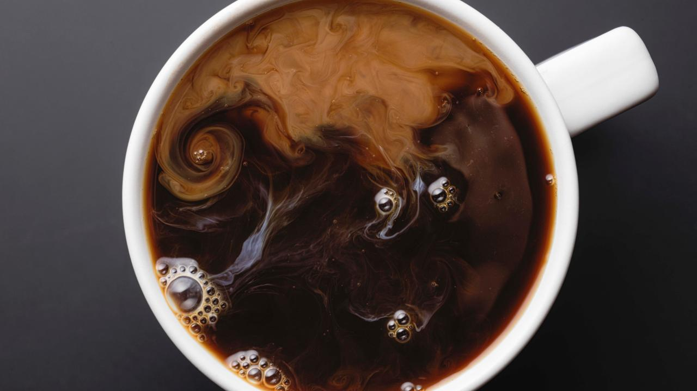

French Press Coffee

Description
We'll talk about how to brew a simple cup of coffee in a french press-
a classic you can enjoy every day.
Ingredients
- 5 tablespoons of ground coffee
- 12 oz water
- Milk (optional)
- Sugar (optional)
Steps
- Grind coffee beans (or use pre ground coffee) and place
5 tablespoons in a French press.
- Heat 12 oz water until boiling, then place in French press,
pushing plunger down to the top of the water.
- Let brew for 5 minutes.
- Pour coffee in a cup.
- Add sugar and cream if desired.